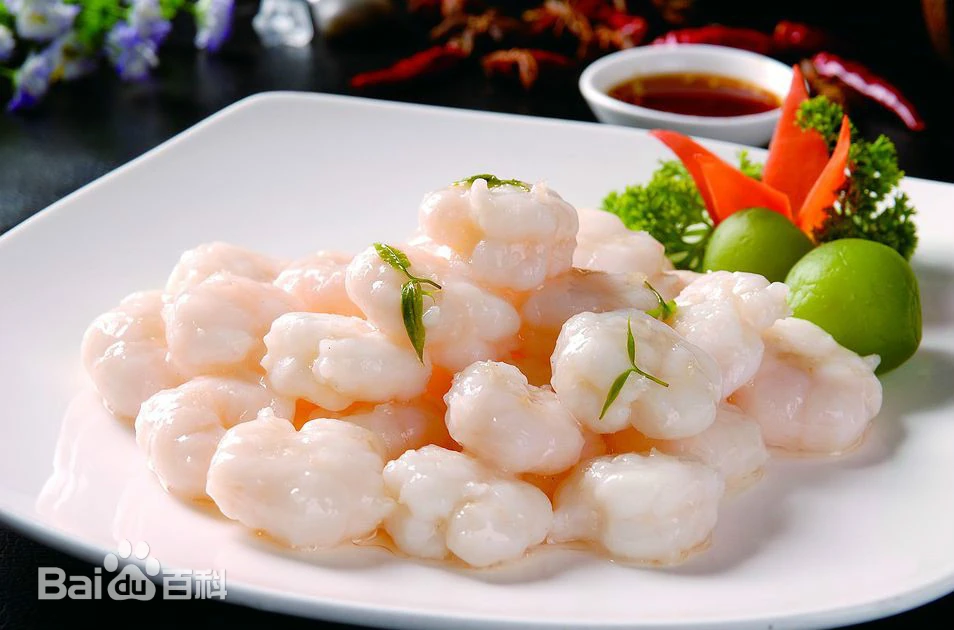
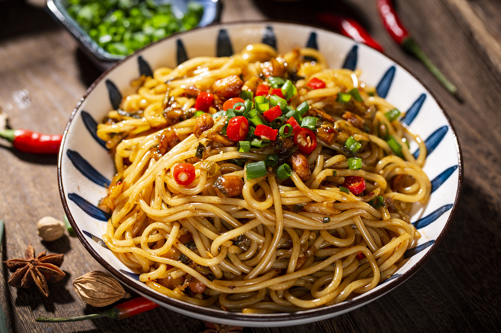
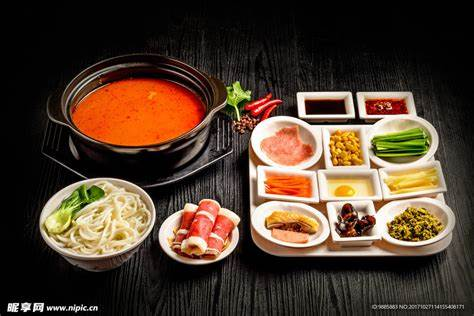
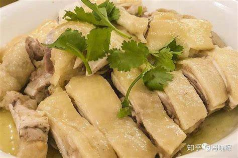
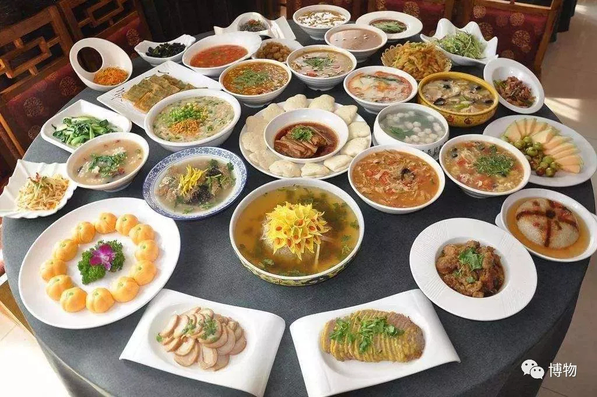
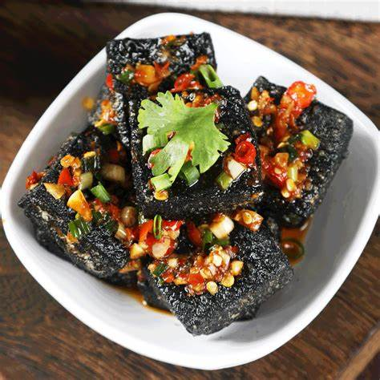
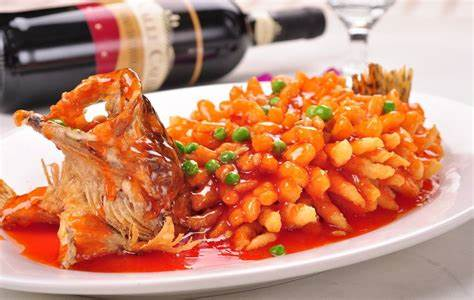
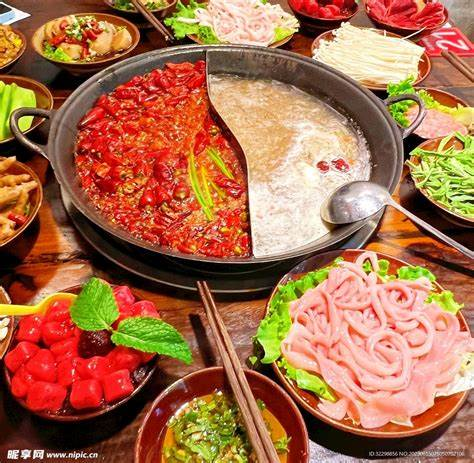
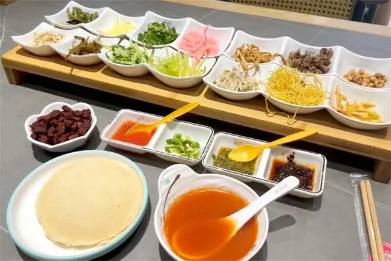

龙井虾仁，浙江杭州名菜，将茶饮与虾仁融合，虾仁玉白，芽叶清香，虾中有茶香，茶中有虾鲜，食后清口开胃，回味无穷

南昌拌粉，源自江西南昌。做法是将米粉涮热后装盘并放入剁椒、花生米、萝卜丁、食用油、酱油、葱花等佐料调拌而成

过桥米线，来自云南省滇南地区，属滇菜系，是由汤料、佐料、生的猪里脊肉片、鸡脯肉片、乌鱼片、鱿鱼片等制作而成

文昌鸡，产自文昌，皮薄骨酥，肉质香甜嫩滑，营养丰富,具有色、香、味、型、营养俱佳等特色，荣居海南“四大名菜”之首

洛阳水席，河南洛阳名宴，始于唐代，已有1000多年的历史。有荤有素、选料广泛、可简可繁、味道多样，酸、辣、甜、咸俱全

臭豆腐，中国传统特色小吃之一，来源湖南长沙，具有“闻起来臭、吃起来香”的特点。外陋内秀、平中见奇，令人欲罢不能

松鼠桂鱼，是厨师用鲤鱼出骨，在鱼肉上刻花纹，稍腌后拖上蛋黄糊，入热油锅嫩炸后浇上糖醋汁，外脆里嫩，酸甜可口

火锅，起源于四川，所有的食材都是现吃现烫，味道辣咸鲜，油而不腻，解郁除湿，适于山川之气候，老少皆宜，至冬之佳品

丝娃娃，指将面粉烙成薄饼，包裹上各种蔬菜丝，面皮薄透可口，和蔬菜的清香相得益彰，再搭配上酸辣的蘸水，回味无穷